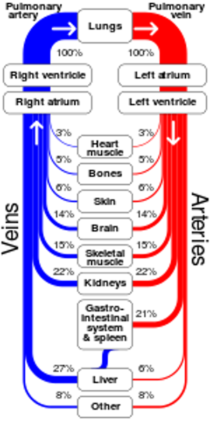
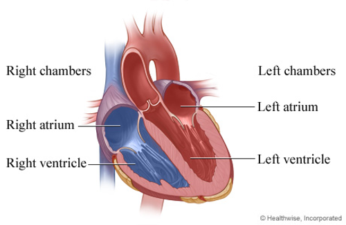
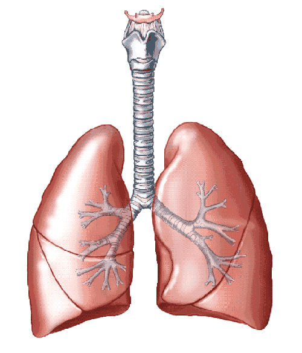
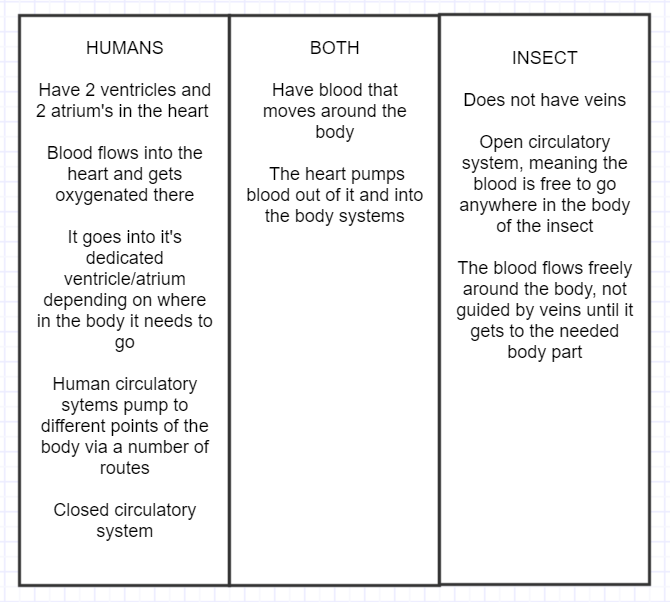
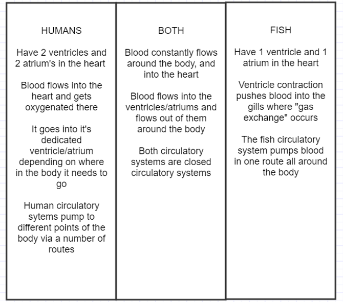

The circulatory system, also called the cardiovascular system, is a body system which handles functions such as pumping blood through the veins all around the body, deliver different types oxygen to the blood cells, and much more. The cardiovascular system requires a heart, bloods vessels, lungs and much more for the circulatory system to function properly inside our bodies. If we weren’t to have a circulatory system inside ourselves, we could not live and be able to function normally as human beings, making it a vital necessity for all of us.
Why do we need the Cardiovascular System?
The circulatory system delivers nutrients and oxygen throughout the entire body. The system consist of the Heart, Veins and Arteries. The Arteries carry blood away from the Heart, while the Veins carry blood back to the Heart. The circulatory system is one of the most important systems in your body because it delivers oxygen throughout your body and contributes to your survival.
The reason we need oxygen is because our bodies need it to burn sugars and fatty acids within cells via the lungs and Circulatory System. Without oxygen that the cells use to convert into energy, they start to die. The Brain is the most important when it comes to using oxygen because it takes up to 20 percent of the bodies oxygen. The Brain needs a consistent, uninterrupted flow of oxygen to function properly which is why the Circulatory System is so vital to our lives.
The Circulatory System also helps regulate body temperature. This occurs when your body is either too hot or too cold. When we’re cold, our body starts to produce more warmth by contracting muscles, which is shown as shivering and shutting off Blood Vessels to the skin in order to limit heat loss. If we are hot, the body opens up the Blood Vessel of the skin so it can release more heat via convection. Sweating evaporating sweat is another effective mechanism of cooling the body and regulating its temperature.
What is it made up of?
In the cardiovascular system there are three organs, The Heart, the Lungs and thee blood vessels, which is Arteries, Veins and Capillaries. The heart like all organs has a structure. The Heart has 4 parts/chambers which consist of 2 ventricles and 2 atria. The ventricles are what pump blood were as the atria receive blood.
The Heart
The heart is a pump, its function in the body is to keep blood flowing to organs which need the vital nutrients that the blood carries. The heart has four chambers, the right atrium, the left atrium, the left ventricle and the right ventricle. These four components work together in order to oxygenate the blood as well as to send it out to different parts of the body.
The right ventricle receives blood from the veins after it has completed its trip to the organs and no longer contains oxygen. From the right ventricle it moves to the right atrium. The right atrium pumps the blood out into the lungs. The lungs, being big bags of air, contain oxygen which is infused into the blood, making the blood useful to the organs again. The left ventricle receives the newly oxygenated blood from the lungs. From the left ventricle the blood is moved down into the left atrium to complete its final stage of its journey through the heart. The left atrium gives one final push, and the blood is sent out into the body to complete a circulation through the circulatory system.
This all happens over 60 times a minute. This all happens, in the span of a heartbeat.
The Hearts walls are made up of 3 layers. Which are called “epicardium, myocardium and endocardium”. The epicardium is the outside layer. The epicardium is a layer of membrane that helps protect the outside of the heart. The middle layer is called the myocardium which makes up most of the weight and thickness of the Heart. The myocardium also is the layer that contains the Cardiac muscle tissue. Cardiac muscle tissue is what pumps the blood. Because the heart beats continually and powerfully with no rest throughout a persons lifetime the cardiac muscle tissue has to have incredible endurance as well as a high contractile strength. The inner most layer is the endocardium which Is smooth and is responsible for preventing blood from sticking to the inside of the heart which can cause blood clots.
Lungs
The lungs are one of your bodies gateways to the outside world. The world outside contains a wealth of things our body needs, such as oxygen, as well as a harmless place to leave waste which we don’t need, such as carbon dioxide. Blood is run through the lungs by the heart in order for it to take in oxygen, as well as to remove carbon dioxide which could be harmful if to much is left inside the body.
Blood Vessels
While not technically an organ, the blood vessels make up one of the largest parts of the circulatory system. There are two different types of blood vessels, veins and arteries, they differ because of the type of blood they carry. The blood vessels also differ because of there size. The largest vessel carry blood out of the heart, such as the aorta, while the smallest vessels take blood to the furthest extremities these are called capillaries.
Arteries carry fresh blood after it has left the heart, this blood contains oxygen, this is what gives the blood its red color. After blood has had all the oxygen taken out of it by various organs it is sent back to the heart in veins. These are the ones most commonly seen through skin, due to there dark blue color from the lack of oxygen. Veins take blood straight back to the heart where the blood is oxygenated and begins the cycle all over again.
In other Creatures
Below are two 'Venn Diagrams', created by Laurence, comparing the human circulatory system to that of fish and insects.
 Other Projects
Here are some other projects we made related to the circulatory system.